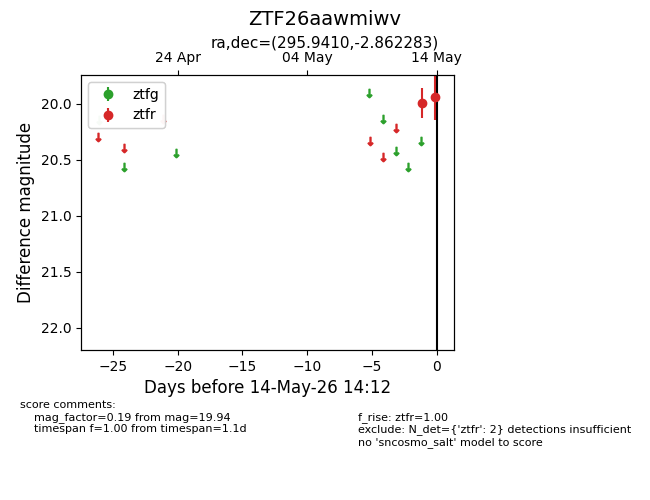
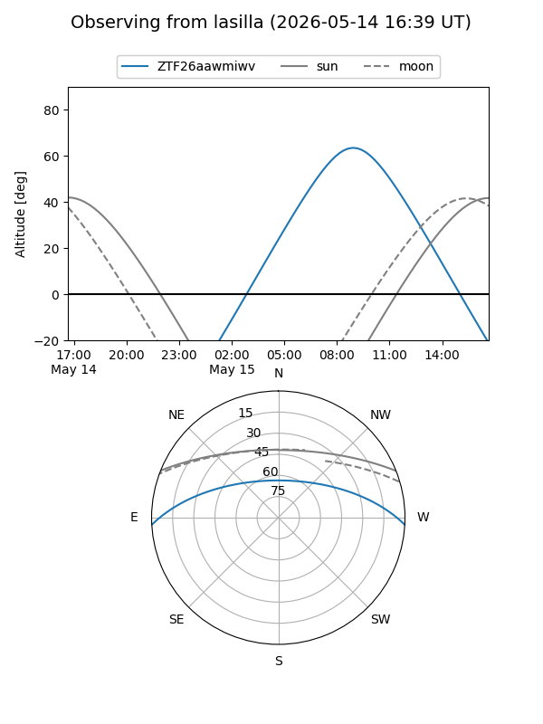
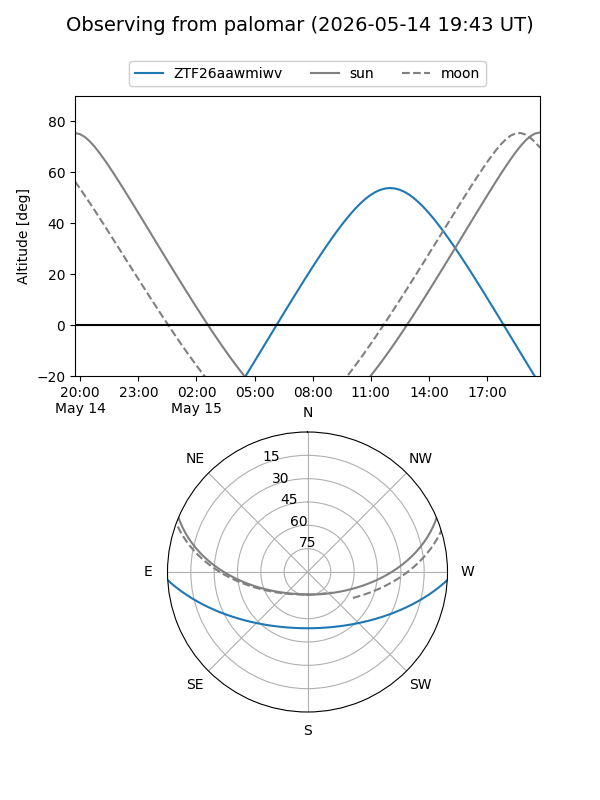

ZTF26aawmiwv
Target ZTF26aawmiwv at 2026-05-14 14:14
Aliases and brokers:
FINK: link
Lasair: link
ALeRCE: link
alt names
ZTF26aawmiwv (ztf,fink_ztf)
Coordinates:
equatorial (ra, dec) = 295.9410,-2.86228
equatorial (HMS+DMS) = 19:43:45.84,-02:51:44.22
galactic (l, b) = (36.3811,-12.94149)
Flags:
Photometry:
last ztfr=19.94
2 ztfr detections
Lightcurve

Visibility


Additional plots